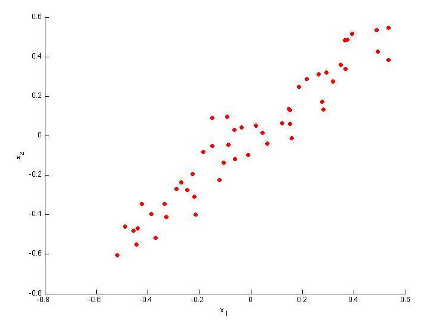
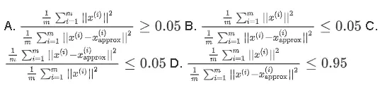

第 66 题
考虑以下二维数据集：

下列哪个图片对应的PCA可能返回的u⁽¹⁾（第一特征向量/第一主成分）的值？选出所有正确项查看答案与解析
答案 A、B
散点主要沿左下到右上方向散开。A、B 都沿这条轴，只是箭头方向相反。翻转特征向量的符号不会改变投影所在的直线。C、D 更接近与最长方向垂直的轴。
题册勘误 原文解答先写 C、D，又注明参考答案 A、B。按散点图和最大方差方向选 A、B。
PCA 找一条能保留最多变化的轴，用更少的坐标近似表示原来的点。
同一批物品的长和宽通常一起变化。如果存储只够给每件物品记一个数字，该沿哪条轴量位置？会丢掉多少信息？
接上之前学过的内积与形状。
如果测到很多人的身高和臂展，两列数常常一起增大。与其记住每个点原来的两个坐标，也可以沿着点云伸展最明显的方向记一个坐标。这种用更少坐标表示数据的做法叫降维。
主成分分析（PCA）把点投到一条或几条轴上。投影像把点垂直落到轴上；重建是用保留下来的坐标估回点的位置。图里的虚线显示重建时丢掉了哪一段。
先比较 0° 和 90°，再试 45° 和 135°。预测哪里红线最短，然后看平均重建误差。
蓝点是原位置，空心绿点是近似重建的位置，红色虚线是丢掉的那段距离。
主成分分析（PCA）先给每一列减去均值，这一步叫中心化。方差度量数值围绕均值散开的程度。PCA 寻找投影后数据最分散的单位方向，叫第一主成分。方向反过来只会使坐标变号。
投影可以想成把点垂直落到一条轴上。原来记录两个坐标，现在用沿这条轴的一个坐标表示。第二个主成分与第一个垂直，并尽量解释剩余变化。如果一列用厘米、另一列用千克，原始单位和数值范围可能左右哪一列看起来更「分散」。此时可以先按列缩放，再做 PCA。
单位方向指长度为 1 的向量，只表达朝哪边，不额外放大长度。把保留的 k 个单位方向排成矩阵 Ureduce，每列是一个方向。设 x 已减均值，z = Ureduceᵀx 是压缩后的坐标，xapprox = Ureducez 是在原空间的近似点。
重建到原始坐标时，还需把之前减掉的均值加回去。如果舍弃了一些方向，就可能丢失细节。若保留 n 个方向，维度仍是 n。
方差保留比例 = 1 − (重建残差平方和 / 中心化数据平方和)比较时要用中心化的数据。比如要求保留至少 95%，就让右边的丢失比例至多 5%，然后选满足条件的最小 k。
PCA 可用于压缩、把高维数据投影到二维画图，或减少后续模型的输入数。它的目标是保留输入变化，没有用到实际标签 y，后续任务表现还要验证。
用 x₂=x₁ 的投影轴重建 (2,3)。它与 (3,2) 的重建结果有什么关系？
两者 x₁+x₂ 都等于 5，所以投影坐标同为 5/√2，重建点同为 (2.5,2.5)。压缩丢掉了区分它们的那部分变化。
把中心化样本写成矩阵 X，每行一个样本。投影方差可写为 uᵀ(XᵀX/m)u。XᵀX/m 称为协方差矩阵：对角线记录每列有多分散，其他位置记录两列如何一起变化。它的特征向量是经矩阵作用后方向不变的轴；特征值衡量对应轴的投影方差。取最大的几个即可，也可用奇异值分解（SVD）求这些方向。沿主轴的正负号都可用。
先独立作答，再展开解析核对。计算题可以在纸上列式。
考虑以下二维数据集：

下列哪个图片对应的PCA可能返回的u⁽¹⁾（第一特征向量/第一主成分）的值？选出所有正确项答案 A、B
散点主要沿左下到右上方向散开。A、B 都沿这条轴，只是箭头方向相反。翻转特征向量的符号不会改变投影所在的直线。C、D 更接近与最长方向垂直的轴。
题册勘误 原文解答先写 C、D，又注明参考答案 A、B。按散点图和最大方差方向选 A、B。
以下哪一项是选择主成分k数量的合理方法？（n是输入数据的维度，m 是输入示例的数量）
答案 A
对已中心化的数据，把按从大到小排列的各方向方差累加，从最小的 k 开始，找到累计比例首次达到 99% 的位置。C 只要求 1%，D 按特征数比例选择，均与题意不同。B 只写了误差公式，缺乏阈值或比较条件。
题册勘误 原题 B 项只有重建误差公式，按原样保留，无法判断它本来要给出哪条阈值条件。
运行 PCA 后保留至少 95% 的方差。哪条不等式表示同一条件？以下各式中的「数据平方均值」指中心化数据的各坐标平方相加后取平均，「重建误差」指重建残差的各坐标平方相加后取平均。

答案 C
计算重建残差的平方和，除以中心化数据的平方和，得到丢失方差比例。保留至少 95% 等价于丢失至多 5%，即 C。A、B、D 的分子是总量、分母是残差，比例倒过来了。
题册勘误 若“95%”指恰好等于 95%，丢失比例应恰等于 0.05。按题给选项中的课程惯例，取“至少保留 95%”。
以下哪项陈述是正确的？选择所有正确项
答案 B、D
PCA 先减去每列均值，B 正确；维数上限是原维数 n，D 正确。A 可以用保留的方向分别乘以 z 中对应的压缩坐标，再相加得到中心化数据的近似。加回均值可回到原坐标。C 中通常用特征分解或奇异值分解（SVD）直接求方向，不需要像 K-means 那样多试几组初始中心。
以下哪项是PCA的推荐应用？选择所有正确项
答案 B、D
保留更少的坐标可节省存储，也可能减轻后续模型的计算量，因此选 B、D。A 中 PCA 没有利用回归的目标 y。C 已经是二维，取两个主成分只做换轴，未降到更少的维度；把高维数据降到二维才是常见的可视化应用。
主成分是方差最大的方向，正负都可。方差保留比例等于 1 减去残差平方占比。
一个二维点和一个二维单位方向做内积，结果有几个数字？
只有 1 个。这个标量就是点沿所选轴的坐标。